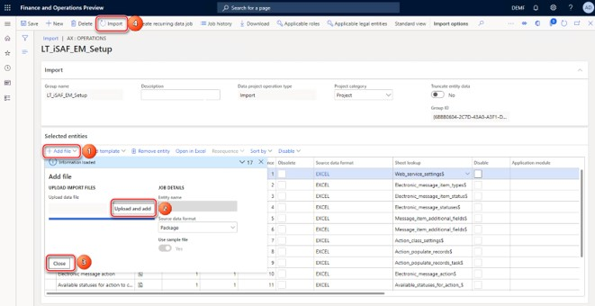
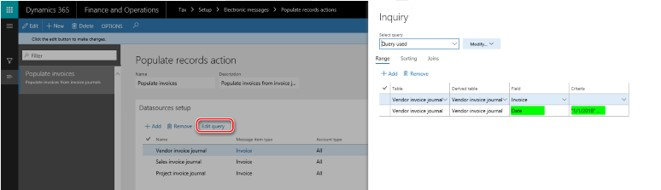
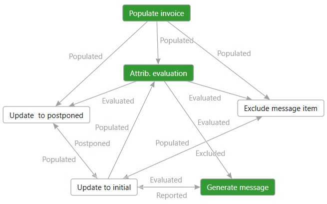
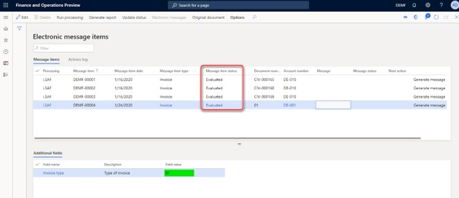
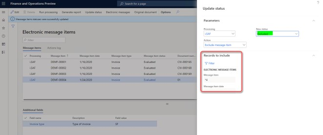

i.SAF reporting for Lithuania
According to Order No VA-55, "On the Approval of Rules for the Processing and Submitting of the Data Taxes Invoice Registers", which was approved by the Head of the State Tax Inspectorate under the Ministry of Finance of the Republic of Lithuania in 2004 April 21, the processing and submission of data about value added tax invoice registers is updated to create conditions for the taxable persons to present the data of issued and received invoices for the Tax Authority using standardized format for the i.SAF application. The i.SAF format must match the current standard of accounting data files technical specifications and technical requirements (FileVersion iSAF1.2).
Overview
This topic describes how to set up Electronic Reporting (ER) configurations for i.SAF report and how to set up and use Electronic Messages (EM) functionality in Dynamics 365 Finance.
The topic includes information about the following:
- Import and set up ER configurations and application-specific parameters
- Set up EM functionality
- Work with EM functionality to prepare i.SAF report.
Import and set up Electronic Reporting configurations
To prepare Finance for i.SAF reporting, you must import the following ER configurations.
| Configuration name | Configuration type |
|---|---|
| Invoices Communication Model | Data model |
| i.SAF model mapping | Model mapping |
| i.SAF format (LT) | Format |
Import the latest versions of these configurations. The version description usually includes the number of the Microsoft Knowledge Base (KB) article that explains the changes that were introduced in the configuration version.
Note
After all the ER configurations from the preceding table are imported, set the Default for model mapping option to Yes for i.SAF model mapping ER configuration.
For more information about how to download ER configurations from Microsoft Dynamics Lifecycle Services (LCS), see Download Electronic reporting configurations from Lifecycle Services.
Standard VAT codes and application-specific parameters setup
Table 1 “VAT table” of the “Tables of the Technical Specification of the Standard Accounting Data File” (here and further “Standard VAT codes”) defines the following standard VAT codes used by companies in Lithuania for i.SAF reporting:
| Standard VAT code | Description |
|---|---|
| PVM1 | Goods and services supplied within the territory of the country (Article 19(1) of the Law of the Republic of Lithuania on Value Added Tax (LVAT)) |
| PVM2 | Goods and services supplied within the territory of the country (Article 19(3) of the LVAT) |
| PVM3 | Goods and services supplied within the territory of the country (Article 19(4), (5) of the LVAT) |
| PVM4 | When the buyer must withhold and pay VAT on goods and services supplied to them (Article 96 of the LVAT) expired 2016-03-31 |
| PVM25 | When the buyer must withhold and pay VAT on goods and services supplied to them (Article 96 of the LVAT) Rate 21% |
| PVM26 | When the buyer must withhold and pay VAT on goods and services supplied to them (Article 96 of the LVAT) Rate 9% |
| PVM27 | When the buyer must withhold and pay VAT on goods and services supplied to them (Article 96 of the LVAT) Rate 5% |
| PVM5 | When the supply of goods and services is exempt from VAT (Articles 20–33 and 112 of the LVAT) |
| PVM6 | When the supply of goods and services are for the private use of a VAT payer (Articles 5 and 6 of the LVAT) Rate 21% |
| PVM7 | When the supply of goods and services are for the private use of a VAT payer (Articles 5 and 6 of the LVAT) Rate 9% |
| PVM8 | When the supply of goods and services are for the private use of a VAT payer (Articles 5 and 6 of the LVAT) Rate 5% |
| PVM28 | When the supply of goods and services are for the private use of a VAT payer (Articles 5 and 6 of the LVAT) Rate 0% |
| PVM29 | When the supply of goods and services are for the private use of a VAT payer (Articles 5 and 6 of the LVAT) Rate - |
| PVM9 | The manufacture of tangible fixed assets by a VAT payer themself and the material improvement of the building (structure) owned or not owned by a VAT payer (Article 6 of the LVAT) Rate 21% |
| PVM30 | The manufacture of tangible fixed assets by a VAT payer themself and the material improvement of the building (structure) owned or not owned by a VAT payer (Article 6 of the LVAT) Rate 9% |
| PVM31 | The manufacture of tangible fixed assets by a VAT payer themself and the material improvement of the building (structure) owned or not owned by a VAT payer (Article 6 of the LVAT) Rate 5% |
| PVM10 | When the taxation of transactions is subject to a special taxation scheme (margin) (Articles 101–105, 106–110 of the LVAT) Exp.on 31-03-2016 Rate 21, 9, 5, 0 |
| PVM32 | When transactions are subject to a special taxation scheme (margin) (Sections II, III of the LVAT) Rate 21% |
| PVM33 | The application of special taxation scheme (margin) to transactions (Sections II, III of the LVAT) Rate 0% |
| PVM12 | The export of goods (Article 41 of the LVAT) Rate 0% |
| PVM13 | Goods are supplied to the EU VAT payers (Article 49(1), (4) of the LVAT) Rate 0% |
| PVM14 | Other transactions (Articles 42, 43, 44, 45, 46, 47, 48, 49(2) and (3), 51, 52, 53(1), (5), (6) and (10) of the LVAT) Rate 0% |
| PVM15 | Goods and services supplied outside Lithuania. Where VAT is not chargeable because the supply of goods and services is considered to have taken place outside Lithuania and therefore not subject to VAT in Lithuania, but VAT can be deducted according to the provisions of Article 58(1)(2) of the LVAT rate. |
| PVM34 | Goods and services supplied outside Lithuania. Where VAT is not chargeable because the supply of goods and services is considered to have taken place outside Lithuania and VAT can't be deducted according to the provisions of Article 58 of the LVAT rate. |
| PVM16 | Where the acquisition of goods from other Member States is considered to have taken place within the territory of the country (Articles 41 and 122 of the LVAT) Rate 21% |
| PVM17 | Where the acquisition of goods from other Member States is considered to have taken place within the territory of the country (Articles 41 and 122 of the LVAT) Rate 9% |
| PVM18 | Where the acquisition of goods from other Member States is considered to have taken place within the territory of the country (Articles 41 and 122 of the LVAT) Rate 5% |
| PVM35 | Where the acquisition of goods from other Member States is considered to have taken place within the territory of the country (Articles 41 and 122 of the LVAT) Rate 0% |
| PVM36 | Where the acquisition of goods from other Member States is considered to have taken place within the territory of the country (Articles 41 and 122 of the LVAT) |
| PVM19 | Where the goods acquired by a VAT payer of the Republic of Lithuania, who is an intermediary (second party) in three-way trading were directly exported from one Member State to other Member State and supplied to a VAT payer of such other Member State (Article 122(3) of the LVAT) |
| PVM20 | When services are acquired from foreign countries (excluding the EU VAT payers) and the output VAT is calculated by the buyer (Article 95(2) of the LVAT) Rate 21% |
| PVM37 | When services are acquired from foreign countries (excluding the EU VAT payers) and the output VAT is calculated by the buyer (Article 95(2) of the LVAT) Rate 5% |
| PVM38 | When services are acquired from foreign countries (excluding the EU VAT payers) and the output VAT is not calculated by the buyer (Article 95(1)(3) of the LVAT) Rate 0% |
| PVM39 | When services are acquired from foreign countries (excluding the EU VAT payers) and the output VAT is not calculated by the buyer (Article 95(1)(2) of the LVAT) |
| PVM21 | When services are acquired from the EU VAT payers, the output VAT is calculated by the buyer (Article 95(2) of the LVAT) Rate 21% |
| PVM40 | When services are acquired from foreign countries (excluding the EU VAT payers) and the output VAT is calculated by the buyer (Article 95(2) of the LVAT) Rate 5% |
| PVM41 | When services are acquired from foreign countries (excluding the EU VAT payers) and the output VAT is calculated by the buyer (Article 95(2) of the LVAT) Rate 0% |
| PVM42 | When services are acquired from foreign countries (excluding the EU VAT payers) and the output VAT is calculated by the buyer (Article 95(2) of the LVAT) Rate - |
| PVM22 | Where VAT on goods and services supplied by a foreign taxable person not established within the territory of the country (excluding the cases of PVM18, PVM19) is calculated and paid by the buyer (Article 95(3), (4) and (5) of the LVAT) Exp. on 31-03-2016 Rate 21, 9, 5 |
| PVM43 | Where VAT on goods and services supplied by a foreign taxable person not established within the territory of the country (excluding the cases of PVM18, PVM19) is calculated and paid by the buyer (Article 95(3), (4) and (5) of the LVAT) Rate 21% |
| PVM44 | Where VAT on goods and services supplied by a foreign taxable person not established within the territory of the country (excluding the cases of PVM18, PVM19) is calculated and paid by the buyer (Article 95(3), (4) and (5) of the LVAT) Rate 9% |
| PVM45 | Where VAT on goods and services supplied by a foreign taxable person not established within the territory of the country (excluding the cases of PVM18, PVM19) is calculated and paid by the buyer (Article 95(3), (4) and (5) of the LVAT) Rate 5% |
| PVM46 | Where VAT on goods and services supplied by a foreign taxable person not established within the territory of the country (excluding the cases of PVM18, PVM19) is calculated and paid by the buyer (Article 95(3), (4) and (5) of the LVAT) Rate 0% |
| PVM47 | Where VAT on goods and services supplied by a foreign taxable person not established within the territory of the country (excluding the cases of PVM18, PVM19) is calculated and paid by the buyer (Article 95(3), (4) and (5) of the LVAT) Rate - |
| PVM23 | The calculated import VAT. Rate 21, 9, 5 |
| PVM24 | The Import VAT where the offsetting is controlled by the STI. Rate 21, 9, 5 |
| PVM48 | Goods and services acquired outside Lithuania (including the cases of charging VAT of a foreign country and of the import of goods for domestic consumption) where the acquisition of goods and services is considered to have taken place outside the Republic of Lithuania and the output VAT is not chargeable because the acquisition is not subject to VAT in Lithuania. |
| PVM49 | Where agricultural products and services are purchased from farmers who are subject to the compensatory VAT rate scheme Rate 6% |
| PVM100 | Other cases |
Starting from version 52.4 of the i.SAF format (LT) ER configuration, the format includes application-specific parameters where a user must define which Sales tax codes in the system correspond to which values from the enumerated list of VAT codes prescript as "Standard VAT codes".
- To setup application-specific parameters, go to the Electronic Reporting workspace, select the i.SAF format (LT) format, and then select Configurations > Application specific parameters > Setup.
- On the Action Pane, on the Lookups tab, select ReportTaxCodesLookup to view the latest version of the format.
- On the Conditions FastTab, define which Standard VAT codes must correspond to which System Sales tax codes.
For example, if you have in the system two System Sales tax codes, VAT1 and VAT2 which must be reported in one Standard VAT codes PVM1, you would need to add the following lines on the Conditions FastTab:
| Lookup result | Line | Tax Code |
|---|---|---|
| PVM1 (the value must be selected from the predefined enumerated list) | 1 | VAT1 (the value must be selected from the list of values which are entries in the Sales tax codes table) |
| PVM1 (the value must be selected from the predefined enumerated list) | 2 | VAT2 (the value must be selected from the list of values which are entries in the Sales tax codes table) |
The Line column is used for the counter which controls the order of execution of the conditions of the lookup field.
- Add all of the conditions for those “Standard VAT codes” that must be reported for your Legal entity. According to documentation, the list of “Standard VAT codes” is the following:
| Lookup result | Line | Tax Code |
|---|---|---|
| PVM100 | The last in your list | *Not blank* |
Note
It is important to add “PVM100” which must collect data by “other cases” as the last in the list. The Line value must be the last in your table.
This setup means that all the tax transactions for Sales tax code, of which there is no specific setup as no “Standard VAT code” is specifically defined for it, will be considered for PVM100. It is mandatory to define this lookup result field at the end of the list of your conditions.
You can easily export the setup of application-specific parameters from one version of a report and import it into another version. You can also export the setup from one report and import it into another report, provided that both reports have the same structure of lookup fields.
When you've finished setting up conditions, change the value of the State field to Completed, save your changes, and close the page.
Import a package of data entities that include a predefined electronic messaging setup
Electronic Messages functionality is provided to maintain different processes of electronic reporting of different document types. For more information about Electronic messages, see Electronic messaging.
The process of setting up the Electronic messages functionality for i.SAF has many steps. Because the names of some predefined entities are used in the ER configurations, it's important that you use a set of predefined values that are delivered in a package of data entities for the related tables.
Note
Before you import setup data from the package of data entities, complete the to make sure that the data entities in your application are refreshed and synced.
- In LCS, go to the Shared asset library, and select the Data package asset type.
- Find LT i.SAF setup for Electronic messages.zip in the list of data package files, and download it to your computer.
- After the LT i.SAF setup for Electronic messages.zip file is downloaded, open Finance, select the company that you will interoperate with HMRC from, and then go to Workspaces > Data management.
- In the Data management workspace, go to Framework parameters > Entity settings, and then select Refresh entity list. Wait for confirmation that the refresh has been completed. For more information about how to refresh the entity list, see Entity list refresh.
- Validate that the source data and target data are correctly mapped. For more information, see the section about validation in Data import and export jobs.
- Before the data entities are used for the first time to import the data from the package, sync the mapping of source data and target data. In the list for the package, select a data entity, and then, on the Action Pane, select Modify target mapping.
- Above the grid for the package, select Generate mapping to create a mapping from scratch and then save the mapping.
- Repeat steps 6 and 7 for each data entity in the package before you start the import.
For more information about data management, see Data management.
- You must now import data from the LT i.SAF setup for Electronic messages.zip file into the selected company. In the Data management workspace, select Import, and set the Source data format field to Package.
- Select Upload and add, select the LT i.SAF setup for Electronic messages.zip file on your computer, and upload it.

You will get a notification in Messages, or you can manually refresh the page to see data import progress. When the importing process is complete, you will see the results on Execution summary page.
The LT i.SAF setup for Electronic messages.zip package provides a setup for "i.SAF" processing that supports the process of i.SAF reporting composed generaly of three elements:
- Populate invoices – Invoices are added to the Message items table.
- Attributes evaluation – The Document type field values are evaluated for all of the invoices added to the Message items table.
- Generate message – Electronic message will be created, and related Message items according to their status and criteria setup will be linked to the generated Electronic message. The i.SAF report will be generated and attached to the Electronic message.
Set up data sources to collect documents to be reported
i.SAF processing lets you collect invoices to be reported in the legal entity. You can then generate an i.SAF report. The collection of invoices is implemented by using the Populate invoices action of the Populate record type. To correctly collect invoices, you must define a period for the Populate invoices action.
- Go to Tax > Setup > Electronic messages > Populate records actions, and select Populate invoices.
For i.SAF processing, default data sources set up includes following three data sources:
- VendInvoiceJour: Go to Accounts payable > Inquiries and reports > Invoice > Invoice journal
- CustInvoiceJour: Go to Accounts receivable > Inquiries and reports > Invoice > Invoice journal
- ProjInvoiceJour: Go to Project management and accounting > Project invoices > Project invoices
By default, all records from these data sources will be populated to the Message items table when you select Populate records.
- On the Datasource setup FastTab, select the Vendor invoice journal record, and then select Edit query.
- For the Date field of the Vendor invoice journal table, define the period from which vendor invoices from the selected legal entity must be reported in i.SAF format. You can specify other selection criteria here to reflect specific requirements of your company to i.SAF report.
- Repeat the same setup for other data sources of the report (Sales invoice journal, Project invoice journal) or delete unnecessary data sources from the list.

Set up Electronic messaging parameters for i.SAF
After the data entities are imported into the database, complete the following steps and the Electronic Messages functionality will be ready for use.
- Go to Tax > Setup > Electronic messages > Executable class settings, select the EvaluateInvoiceType_LT executable class, and on the Action Pane, select Parameters.
- In the Invoice type field, select InvoiceType and then click OK.
- Go to Tax > Setup > Electronic messages > Message processing actions and set up related GER configurations in the Format mapping field for the following actions:
| Message processing actions name | GER configuration |
|---|---|
| Generate message | i.SAF format (LT) |
- Go to General ledger > Setup > Parameters to set up Number sequences:
| Number sequences reference | Number sequences description |
|---|---|
| Message | The unique key for a message. Set up a non-continuous number sequence for this Reference. This number sequence will be used for numbering messages when they are generated. |
| Message item | The unique key for a message item. Set up a non-continuous number sequence for this Reference. This number sequence will be used for numbering message items when they are generated from the source tables. |
Set up security roles for electronic message processing
Different groups of users might require access to i.SAF precessing. You can limit access to the processing, based on security groups that are defined in the system.
Complete the following steps to limit access to the i.SAF processing.
- Go to Tax > Setup > Electronic messages > Electronic message processing.
- Select the i.SAF processing, and add the security groups that must work with this processing. If no security group is defined for the processing, only a system admin can see the processing on the Electronic messages page.
Collect data for i.SAF report
The setup of i.SAF processing that is provided by using a package of data entites is shown in the following schema.

The green boxes on the schema show the general process of i.SAF report generation.
- Got to Tax > Inquiries and reports > Electronic messages > Electronic message items, and on the Action Pane, select Run processing.
- In the Processing field, select i.SAF.
- To start collecting data for the i.SAF report, mark the Choose action check box and select "Populate invoice". If you don't mark the Choose action check box, when you select "Populate invoice" the action will run automaticaly as the first from the selected processing. By selecting "Populate invoice", all the invoices from the data sources defined in the procedure, Set up data sources to collect documents to be reported will be generated in Message items table according to the criteria defined for these data sources. All of the invoices will be of the same, "Invoice" Message item type.
- On the Action Pane, select Original document to review original document of the selected Message item.
Define invoice types for i.SAF reporting
When invoices are successfully populated from data sources to the Message items table, the invoice type must be defined for each invoice. Invoice type is stored in the Additional field group for each invoice.
- To define the invoice type, on the Action Pane, select Run processing.
- In the Processing field, select i.SAF.
- Select the Choose action check box and select "Attrib. evaluation" to start defining the invoice type, or leave the Choose action check box cleared and "Attrib. evaluation" action will run automaticaly as the next action from the selected processing. As a result of "Attrib. evaluation" action, for all the invoices which have a status of Populated, the invoice type will be defined and shown in Invoice type field in the Addtional field group for each invoice.

Generate i.SAF report in XML
The i.SAF report must be generated and provided to the Tax Authority in XML format.
- To generate i.SAF report, go to Tax > Inquiries and reports > Electronic messages > Message itemss, and on the Action Pane, select Generate report.
- Select i.SAF in the Processing field and then select "Generate message" in the Action field to generate i.SAF report.
- In the Electronic report parameters dialog page define the following parameters:
| Parameter name | Description |
|---|---|
| Report type | Select one of the allowed reporting types:
|
| From date | Select the start date of the period for which the i.SAF report must be generated. |
| To date | Select the end date of the period for which i.SAF report must be generated. |
| Settlement period | Select the Settlement period to define tax transactions posted, where the Settlement period must be included in the report. |
| Part number | Enter the number of the part of the report. |
| Number of parts | Enter the number of the parts. |
As a result of the "Generate message" action, for all of the invoices with a status of Evaluated, an electronic message will be created and shown in Message column in relation with each invoice. The Status of the messages items included to the report will be changed to Reported. 5. To view the file, select the electronic message item, and then select Attachments (paper clip icon) in the upper-right corner of the page. 6. On the Attachments page for the selected message, select the last attachment, and then, on the Action Pane, select Open.
Regenerate i.SAF report
If you must regenerate i.SAF for some message items, select Update status on the Action Pane to update the status of the message items to initial status. On the Update status dialog page, select i.SAF processing and then Update to initial status. To reverse an invoice status to the initial status, select one of allowed values, Populated or Evaluated.
Exclude or postpone invoice reporting in i.SAF
If you want to exclude an invoice from i.SAF report, select Update status on the Action Pane to update the status of the message items to Excluded. Invoices with a status of Excluded will not the included into the report. On the Update status dialog page, select i.SAF processing, select Exclude message item in the Action field, and then select Excluded in the New status field. You can define additional criteria using the Filter function, and specify which invoice must be excluded from further processing.

If you want to postpone reporting of an invoice in i.SAF report, select Update status on the Action Pane to update the status of the message items to Postponed. Invoices with a status of Postponed will not the included into the report. On the Update status dialog page, select i.SAF processing, select Update to Postponed in the Action field, and then select Postponed in tje New status field. You can define additional criteria by using the Filter function, to specify reporting of which invoice(s) must be postponed by criteria.
You can always reverse status of Excluded or Postponed message items by using the Update to initial status action.